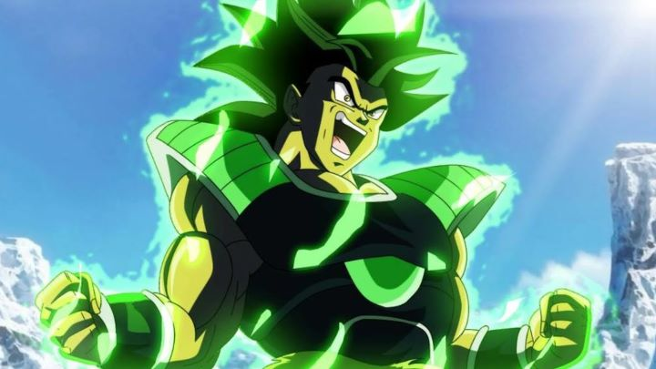

Disclaimer: This is a review of the 2018 anime film "Dragon Ball Super - Broly," not to be confused with prior films featuring the title character."Dragon Ball Z" is having a moment. It resurged in popularity after the 2013 HD film "Battle of Gods," and that renewed interest led to a string of new films, as well as a new tv series ("Super") to add to the epically-long saga. "Dragon Ball Super - Broly" is the third film in this modern reimagining, and it in particular seemed to have a lot of anticipation (and a lot of controversy in America, which I'll touch on briefly). Why the excitement? It's here that I have to remind the reader that, while I grew up on the series on Saturday mornings, I am, at most, a passive fan, and not an avid one. I recognize Frieza, Cell, and Buu, but not most other villains. Broly himself is a villain, and a powerful one at that, but one whose presence is exclusive to one of the many tie-in films the series received in the 1990's. A fan favorite, he'd be featured in three films total. In order to better fit with the "Super" timeline, this new movie is a full reimagining. I have not seen any of the old films, or even "Super," so I went into this somewhat blind."Dragon Ball Z" isn't such a franchise where story matters all that much, but I was worried that my lack of knowledge with this specific character would be an issue. Gratefully, and impressively, "Broly' makes an effort to be accessible, at least to newer fans who haven't seen anything prior to 2013. The first 30 minutes is basically a big prologue, giving a big look into the Saiyan planet before it was destroyed, and a glimpse at the origins of Broly, as well as (to a fan's delight) Goku and Vegeta. Things go quickly after that, and I'd strongly recommend watching the other two modern films ("Battle of Gods" and "Resurrection F"), and ideally, even the "Super" series, but the movie gives enough information to, most importantly, care about what's happening. The rest of the backstory can be simplified as "alien warriors fighting on Earth." In the case of Broly, his backstory is a tragic one. Even as a baby, his power levels appear to be stronger than any his planet had seen, so out of safety (and jealousy), the infant is sent to a remote, inhospitable planet, presumed to die there, or at least be out of their minds. Broly's father catches on quickly, and steals a ship to go after Broly. The ship crashes, and Broly and his father are left stranded, to fend for themselves against massive alien creatures. Broly's father in particular is cold, with his desire for vengence aganst the Saiyans for abandoning his son outweighing his love for his only family. So they spend many years training, with Broly emotionally alone, until someone happens to come by and rescue them.That eventually rescuer happens to be Frieza and his goons. Initially seeking the 7 Dragon Balls (the knowing sense of humor plays well here), Frieza sees Broly and his father's thirst for vengence an opportunity to unleash them at Vegeta on Earth, the only surviving member of the royal family that sent Broly away. Cue in the epic battle that lasts the entire second half of the movie, about 40-minutes' worth, between Vegeta, Goku, and a Broly who slowly loses his control. But despite everything, Broly is clearly a pacifist, disliking violence, and still having the purity of a child at heart. His anger his soley from his father, and when paired with his natural skill and ability to quickly adapt, he might be the strongest foe of the franchise. But one the audience also sympathizes with. Unlike the typical power-hungry villains of "Dragon Ball Z," I didn't know who I wanted to win, fearing that only a sad ending could come from this (miraculously, a happy ending does come out of it all).  It's a simple but effective character-driven story. As expected, the movie is mostly about the action. As I mentioned, about half of the movie is Broly fighting against the lead characters, which sounds like a lot... but the old series was notorious for battles that'd last far longer on television, so this went by in a flash. We're talking flying fighters, punching and kicking at light-speed, throwing energy blasts, and screaming all the while, all on Antartica, with ice getting destroyed everywhere. The excitement doesn't let up, leaving one exhausted even after the movie finishes. For fans of "Dragon Ball Z," this is exactly what you expect and want, and it doesn't disappoint at all. Visually, the production values are relatively high (and worthy of it, given the box-office take it would get in Japan). Characters have a distinct ink outline to them that differs from what I remember, almost as if old cel-animation was used instead of purely digital images. Like 'Battle of Gods," a couple sequences rely on 3D character models for a more dynamic camera, but I was impressed with the restraint of the technique in other large-scale scenes (and so much is happening that you'd likely not notice). The action is tightly choreographed and flashy. Yes, action has been done better elsewhere by now. But, even though I haven't seen enough to say so, I'd believe this is as great as "Dragon Ball" has ever looked, a great theatrical blockbuster experience.Now, addressing the two big issues with the American release of the movie: the voice acting and the Blu Ray quality. The English voice acting is as good as it has ever been, including fan-favorite Vic Mignogna reprising his role as Broly. However, the #metoo movement was at its height in 2018, and Vic's not-so-secret reputation came back to bite him (most forget that this was already addressed with a temporary leave from public appearances in the late 2000's, but it was never made clear if these new allegations were about cases from before or after that date). For what it's worth, Broly barely speaks in this new movie, so I don't think anyone would even notice his voice, whatever your opinions on the matter, and Funimation's Blu Ray has no reference to him in the extra features with the English cast. But it cast a shadow on the theatrical release, enough so for a new actor to replace him for any subsequent instances of the character; it may very well be the last anime role for the man. The larger issue is the Blu Ray picture quality. Some fans noted a green-tint added to the entire movie, which I can't speak on, haven't seen the film in an "original" form. But perhaps due to that color grading issue, there are several instances of color-artifacts, especially on dark-blue clothing, giving a fuzziness I haven't seen since watching a VHS tape. Even playing with my television's color settings didn't help. It's not the first time I've seen such a thing, but it might be one of the worst I've seen on a Blu Ray disc. Other than that color range (noticably causing the issue in less than 5% of the shots), the film is sharp and vibrant, so that the issue exists at all is a shame. While noticable, those production issues from Funimation won't be a concern for the majority of viewers. Unlike Broly's character, you can't just wish them off to some abandoned planet and hope to forget them, or attempt to punch them down to their death for the sake of the human race; they're present, and we have do our best to deal with them and move on. In any format, "Dragon Ball Super - Broly" is a fun, dramatic and engaging piece of the modern saga that will please fans, and possibly create new ones.
- "Ani" More reviews can be found at : https://2danicritic.github.io/ Previous review: review_Dozens_of_Norths Next review: review_Dragon_Ball_Z_-_Battle_of_Gods